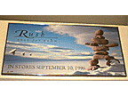

"tour poster"
24" x 36"
Test For Echo poster sold only at concerts. Has a sky-blue background with
15 color shots in concert taken during the Counterparts tour. The stone man
is featured in the bottom left corner. Has "Rush" at the top in red/black TFE
font, "Test For Echo" at the bottom.
|

"blue album promo"
36" x 18"
Landscape of the entire Test For Echo album cover (front and back). "In Stores
September 10, 1996" is written at the bottom in black block letters.
|

"sunset album promo"
36" x 18"
Landscape of the entire Test For Echo album cover (front and back) in
"sunset" colors (browns and oranges) -- the same image on the TFE tourbook.
|